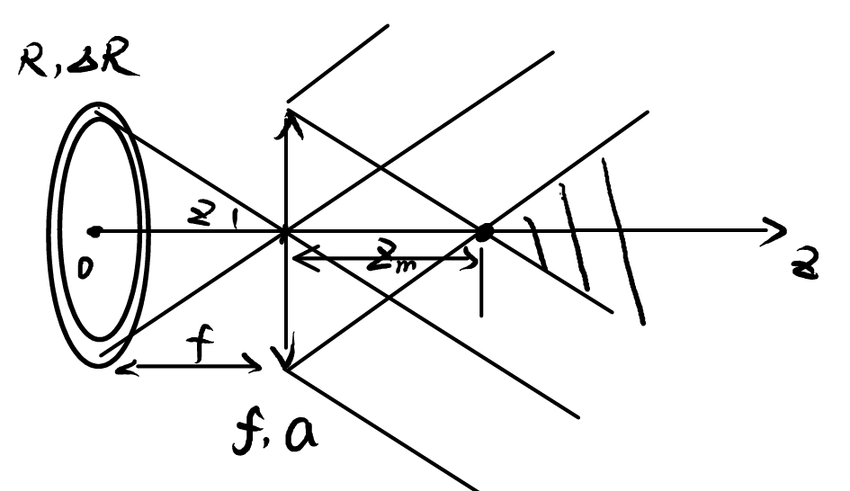
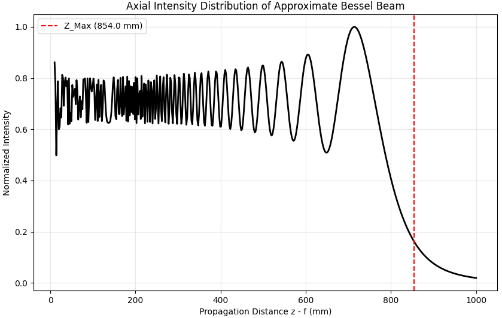
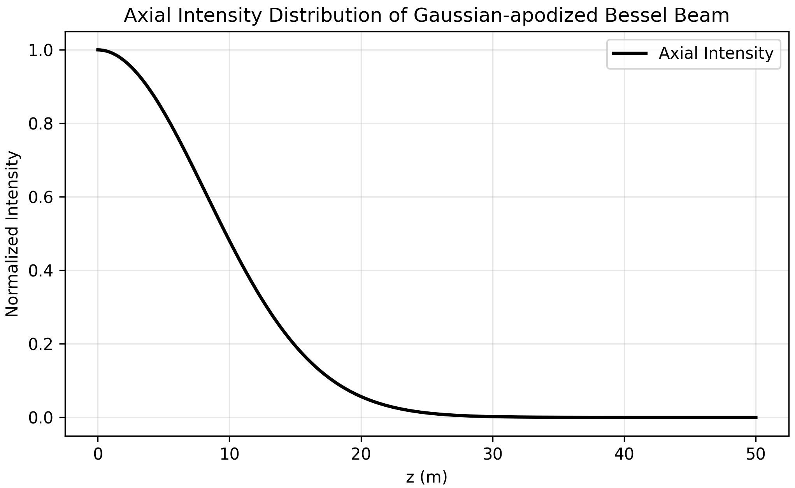

贝塞尔光束的衍射性质
目录
光波的传输通常会受到衍射效应的影响，导致横向光场分布随传播距离增加而发散，这一现象限制了其在对光束准直性敏感的领域的应用。1987年，Durnin 等人提出了一类标量亥姆霍兹方程的特殊解，即贝塞尔光束（Bessel Beam）。贝塞尔光束具有一系列独特的传输特性。理想的贝塞尔光束在自由空间传播时，其横向光强分布保持不变，具有高度局域化强度分布。此外，贝塞尔光束还表现出自愈特性，当光束经过光阑后，在一定传播距离后能够自重建出原始光场。Durnin 将符合这些特性的光束称为无衍射光束（Diffraction-free Beam），这类光束新颖且独特的性质使得其在激光打孔、微粒操控、精密准直等领域展现出广泛的应用前景。
然而，理想的贝塞尔光束在全空间内非平方可积，意味着其携带无限大的能量，这与现实相悖。实际应用中，通常通过环缝 - 透镜系统、轴棱锥等光学元件产生近似贝塞尔光束。这类光束在有限的传播距离内能够较好地符合理想贝塞尔光束的无衍射与自愈特性。
本文旨在探讨贝塞尔光束的衍射特性及其经光阑后的自愈机制，利用理想贝塞尔光束以及环缝 - 透镜系统产生的近似贝塞尔光束的光束方程，分析其无衍射性质以及通过高斯型软边光阑后的衍射特性。
1 贝塞尔光束 #
1.1 理论公式 #
考虑在柱坐标系下求解标量亥姆霍兹方程
$$ \nabla^2 u + k^2 u = 0 \tag{1} $$得到描述贝塞尔光束的一般方程
$$ u_m(r,\varphi,z) = \left[ A J_m(k_r r) + B Y_m(k_r r) \right] e^{i m \varphi} e^{i k_z z} \tag{2} $$附录 \(4.1\) 给出了具体的推导过程。其中 \(k_r^2 = k^2 - k_z^2\)，\(J_m\) 和 \(Y_m\) 分别为第一类和第二类 \(m\) 阶贝塞尔函数。
考虑到 \(Y_m\) 在 \(r=0\) 处奇异，通常，直接称 \(B=0\) 时为 \(m\) 阶贝塞尔光束。
图 1 是通过数值模拟给出的贝塞尔光束的横向光强分布。可见，贝塞尔光束的横向光强分布为一组同心圆环。特别地，零阶贝塞尔光束中心光强为一个亮斑，而高阶的贝塞尔光束中心光强为零。

|

|
|---|
1.2 实际的近似贝塞尔光束 #
理论公式所描述的贝塞尔光束在全平面上非平方可积，意即其携带有无限大的能量，显然与实际相悖。这意味着，理想的贝塞尔光束无法在实际中产生。然而，可以通过近似的方法在有限区域内产生近似的贝塞尔光束。这里以最早提出“无衍射贝塞尔光束”的 Durnin 等人所设计的环缝-透镜系统为例进行说明。
1.2.1 理论分析
利用 Hansen Bessel 公式，对整数阶贝塞尔函数，有
$$ J_m(x) = \frac{1}{2\pi} \int_{-\pi}^{\pi} e^{i x \cos \varphi} e^{i m (\varphi - \pi/2)} \mathrm{d}\varphi \tag{3} $$从而 0 阶贝塞尔光束可表示为
$$ u_0(r,z) = \frac{A_0}{2\pi} \int_{-\pi}^{\pi} e^{i k_r r \cos \varphi} e^{i k_z z} \mathrm{d}\varphi \tag{4} $$可见，0 阶贝塞尔光束可视为由所有与 \(z\) 轴成角度 \(\theta\)（满足 \(k_r = k \sin \theta\)，\(k_z = k \cos \theta\)），具有相同振幅和相位的平面波组成的光束的叠加。
1.2.2 环缝-透镜系统的近似贝塞尔光束方程

如图 2 所示为 Durnin 等人用来产生贝塞尔光束的实验装置。透镜的焦距 \(f\)，孔径 \(2a\), 在前焦面处放置一个环形光阑，环形光阑的半径 \(R\) ，环宽 \(\Delta R\) 。入射光为波长 \(\lambda\) 的平面波。
入射平面波经过环缝-透镜系统后，在傍轴近似下，透镜后方 \(z-f\) 处得到的光场可表示为
$$ \begin{align} E(r, z) =& - k^2 \frac{e^{i k z}}{(z-f) f} E_0 \exp\left( \frac{i k}{2(z-f)} r^2 \right) \cdot\notag \\ &\int^{a}_{0} \int^{R+\frac{\Delta R}{2}}_{R-\frac{\Delta R}{2}} \exp\left( \frac{i k}{2f} r_0^2 \right) \exp\left( \frac{i k}{2(z-f)} r_1^2 \right) J_0\left( \frac{k r_1 r_0}{f} \right) J_0\left( \frac{k r r_1}{z-f} \right) r_0 r_1 \mathrm{d}r_0 \mathrm{d}r_1 \tag{5} \end{align} $$附录 \(4.2\) 给出了具体的推导过程。
1.2.3 光束方程的近似与局限分析
为使上述光束方程近似满足贝塞尔光束方程，需要参数间符合一定要求。
根据 1.2.1 理论分析中的思想，一方面，需要透镜前焦面上环形光阑后表面光场近似为光源分布在环上的点光源的叠加，即能够使用 \(r_0 = R\)， \(d r_0 = \Delta R\) 来代替对 \(r_0\) 的积分。为此，对 \(r_0\) 的积分式中的被积函数 \(\exp\left( \frac{i k}{2f} r_0^2 \right) J_0\left( \frac{k r_1 r_0}{f} \right) r_0\) 应当在积分区间 \([R−ΔR/2,R+ΔR/2]\) 内变化缓慢，即满足
$$ \frac{\Delta R}{R} \ll 1\ ,\quad \frac{k R}{f} \Delta R \ll 1\ ,\quad \left(\frac{k r_1}{f} \Delta R\right)_{max} = \frac{k a}{f} \Delta R \ll 1 \tag{6} $$此时，透镜前表面光场
$$ \begin{align} E_1(r_1,f) &= - i k \frac{e^{i k f}}{f} \exp\left(\frac{i k}{2f} r_1^2\right) \int^{R+\frac{\Delta R}{2}}_{R-\frac{\Delta R}{2}} E_0 \exp\left( \frac{i k}{2f} r_0^2 \right) J_0\left( \frac{k r_1 r_0}{f} \right) r_0 \mathrm{d}r_0 \notag\\ &\approx - i k \frac{e^{i k f}}{f} E_0 \exp\left(\frac{i k}{2f} r_1^2\right) \exp\left( \frac{i k}{2f} R^2 \right) J_0\left( \frac{k r_1 R}{f} \right) R \Delta R \tag{7} \end{align} $$另一方面，需要透镜孔径 \(a\) 足够大，使得透镜屏函数的边界效应对光场的影响尽可能小。为此，关于 \(r_1\) 的积分式 \(\int_0^{\infty} \exp\left( \frac{i k}{2(z-f)} r_1^2 \right) J_0\left( \frac{k r_1 R}{f} \right) J_0\left( \frac{k r r_1}{z-f} \right) r_1\) 其主要贡献部分应位于 \([0,a]\) 内，且远离 \(r_1 = a\) 处，即满足
$$ z - f \ll \frac{f a}{R} \tag{8} $$具体分析见附录 \(4.3\) 。此时，忽略透镜屏函数的边界，透镜后表面光场
$$ \begin{align} E_1(r_1,f) \approx - i k \frac{e^{i k f}}{f} E_0 \exp\left( \frac{i k}{2f} R^2 \right) J_0\left( \frac{k r_1 R}{f} \right) R \Delta R \end{align} \tag{9} $$符合贝塞尔光束在截面处的横向光场分布。从而，透镜后方 \(z-f\) 处光场
$$ \begin{align} E_1(r_1,z) \approx - i k \frac{e^{i k f}}{f} E_0 \exp\left( \frac{i k}{2f} R^2 \right) J_0\left( \frac{k r_1 R}{f} \right) R \Delta R \exp\left(i k \sqrt{1 - \left( \frac{R}{f} \right)^2} (z-f) \right) \end{align} \tag{10} $$为贝塞尔光束。而式 (6) (8) 则给出了上述近似所需满足的参数条件。
2 无衍射性质 #
2.1 理想贝塞尔光束的无衍射性质 #
对贝塞尔光束
$$ u_m(r,\varphi,z) = A J_m(k_r r) e^{i m \varphi} e^{i k_z z} \tag{11} $$其传播距离 \(z\) 变化仅引起相位因子的变化，而横向强度分布
$$ I(r,\varphi,z) = |A J_m(k_r r)|^2 \tag{12} $$与 \(z\) 无关。称这种在传输过程中保持横向光强分布不变的光束为无衍射光束（Diffraction-free Beam）
2.2 近似贝塞尔光束的有限无衍射距离 #
在实际中产生的近似贝塞尔光束只能在有限距离内近似保持无衍射性质。在 1.2.3 节中给出的环缝-透镜系统所产生的近似贝塞尔光束方程，参数条件中
$$ z - f \ll \frac{f a}{R} \tag{8} $$即反映了近似贝塞尔光束的有限无衍射距离。
图 3 图 4 展示了基于式 \((5)\) 进行数值模拟对其作的直观验证。考虑波长 \(\lambda = 632.8\ nm\) 的准直 He - Ne 激光入射，透镜焦距 \(f = 305\ mm\)，半径 \(a = 3.5\ mm\)，环缝半径 \(R = 1.25\ mm\)，环宽 \(\Delta R = 10\ \mu m\)


|

|
|---|---|

|

|
可见，近似贝塞尔光束在远离 \(Z_{max} = \frac{f a}{R} \approx 854\ mm\) （大致 \(z - f = 0 \sim 600\ mm\) 范围内）基本保持无衍射性质。轴上光强分布在一定范围剧烈振荡，这是透镜作为硬边光阑所引起的；横向光强分布则基本保持贝塞尔光束的特征。而当传播距离超过 \(z - f \approx 700\ mm\) 后，透镜的有限边界产生的影响开始显现，光强分布发生明显变化，无法再近似视为无衍射光束。
3 经高斯型软边光阑后的衍射 #
高斯型软边光阑的屏函数遵循高斯函数的形式。在不考虑中心及相位偏移时，屏函数可表示为
$$ t_g(r_0) = \exp\left( - \frac{r_0^2}{w^2} \right) \tag{14} $$利用衍射积分公式，并采用傍轴近似，得到贝塞尔光束经高斯型软边光阑后的光场
$$ \begin{align} E(r, z) =& -\frac{i}{\lambda} \frac{e^{i k z}}{z} \int_{\infty} E_0 J_m(k_r r_0) e^{im\varphi_0} \exp\left(-\frac{r_0^2}{\omega^2}\right) \cdot \notag\\ & \qquad \qquad \exp\left({\frac{i k}{2z} [r^2 + r_0^2 - 2 r r_0 \cos(\varphi - \varphi_0)]}\right) r_0 \mathrm{d}r_0 \mathrm{d}\varphi_0 \notag\\ =& E_0 \frac{k}{k+2i\frac{z}{\omega^2}} \exp\left[ -i\frac{k_r^2}{2k}z \left( \frac{1-2i\frac{1}{\omega^2}\frac{k}{k_r^2}\frac{r^2}{z}}{1+2i\frac{1}{\omega^2}\frac{z}{k}} \right) \right] J_m\left( \frac{k_r k}{k + 2i \frac{z}{\omega^2}} r \right) e^{i m \varphi} e^{i k z} \tag{15} \end{align} $$附录 \(4.4\) 给出了具体的推导过程。在满足参数条件
$$ z \ll k \omega^2 , \quad r \ll \sqrt{ \frac{k_r^2}{k} z \omega^2 } \tag{16} $$时，光场可近似表示为
$$ E(r, z) \approx E_0 \exp\left( -i \frac{k_r^2}{2 k} z \right) J_m(k_r r) e^{i m \varphi} e^{i k z} \tag{17} $$符合贝塞尔光束的形式。
图 5 图 6 展示了基于式 \((15)\) 进行数值模拟对其作的直观验证。考虑波长 \(\lambda = 632.8\ nm\) 的单位振幅的 \(0\) 阶贝塞尔光束，参数 \(k_r = 3\ (mm)^{-1}\)，光阑宽度 \(\omega = 5\ mm\)


|

|
|---|---|

|

|
可见，贝塞尔光束经高斯型软边光阑后，在传播距离远离 \(Z_{max} = k \omega^2 \approx 248\ m\) （大致 \(z = 1 \sim 10\ m\) 范围内）基本保持横向分布不变。横向光强分布则在轴向距离远离 \(r_{bound} = \sqrt{ \frac{k_r^2}{k} z \omega^2 }\) 基本保持贝塞尔光束的特征。
4 附录 #
4.1 贝塞尔光束方程的推导
从单频光场所满足的标量亥姆霍兹方程出发
$$ \nabla^2 u + k^2 u = 0 \tag{18} $$采用柱坐标 \((r,\varphi,z)\)，作变量分离，令
$$ u(r,\varphi,z) = R(r)\ \Phi(\varphi)\ Z(z) \tag{19} $$代入亥姆霍兹方程得
$$ \frac{1}{R} \frac{1}{r} \frac{\mathrm{d}}{\mathrm{d}r} \left( r \frac{\mathrm{d}R}{\mathrm{d}r} \right) + \frac{1}{\Phi} \frac{1}{r^2} \frac{\mathrm{d}^2 \Phi}{\mathrm{d}\varphi^2} = - \frac{1}{Z} \frac{\mathrm{d}^2 Z}{\mathrm{d}z^2} - k^2 \tag{20} $$等式左侧仅依赖于 \(r,\varphi\)，右侧仅依赖于 \(z\)，可令
$$ \frac{1}{Z} \frac{\mathrm{d}^2 Z}{\mathrm{d}z^2} = -k_z^2 \tag{21} $$从而
$$ Z(z) = e^{i k_z z} \tag{22} $$$$ r \frac{\mathrm{d}}{\mathrm{d}r} \left( r \frac{\mathrm{d}R}{\mathrm{d}r} \right) \frac{1}{R} + (k^2 - k_z^2) r^2 = - \frac{1}{\Phi} \frac{\mathrm{d}^2 \Phi}{\mathrm{d}\varphi^2} \tag{23} $$同样地，等式左侧仅依赖于 \(r\)，右侧仅依赖于 \(\varphi\)，可令
$$ \frac{1}{\Phi} \frac{\mathrm{d}^2 \Phi}{\mathrm{d}\varphi^2} = -m^2 \tag{24} $$从而
$$ \Phi(\varphi) = e^{i m \varphi} \tag{25} $$$$ r \frac{\mathrm{d}}{\mathrm{d}r} \left( r \frac{\mathrm{d}R}{\mathrm{d}r} \right) \frac{1}{R} + (k^2 - k_z^2) r^2 - m^2 = 0 \tag{26} $$\(R(r)\) 满足的方程即符合贝塞尔方程的形式，其标准解可写为
$$ R(r) = A J_m(k_r r) + B Y_m(k_r r) \tag{27} $$其中 \(k_r^2 = k^2 - k_z^2\)，\(J_m\) 和 \(Y_m\) 分别为第一类和第二类 \(m\) 阶贝塞尔函数
由此，我们得到了描述贝塞尔光束的一般方程
$$ u_m(r,\varphi,z) = \left[ A J_m(k_r r) + B Y_m(k_r r) \right] e^{i m \varphi} e^{i k_z z} \tag{28} $$4.2 环缝-透镜系统所产生的近似贝塞尔光束方程的推导
平面波通过环形光阑后光场
$$ E_0(r_0, 0) = \begin{cases} E_0 &,\ R - \frac{\Delta R}{2} \leq r_0 \leq R + \frac{\Delta R}{2} \\ 0 &,\ otherwise \end{cases} \tag{29} $$利用菲涅尔-基尔霍夫衍射积分公式，采用傍轴近似，得到
$$ \begin{align} E_1(r_1,f) &= -\frac{i}{\lambda} \frac{e^{i k f}}{f} \int_{\infty} E_0(r_0, 0) \exp\left({\frac{i k}{2f} [r_1^2 + r_0^2 - 2 r_1 r_0 \cos(\varphi_1 - \varphi_0)]}\right) r_0 \mathrm{d}r_0 \mathrm{d}\varphi_0 \notag\\ &= - i k \frac{e^{i k f}}{f} \exp\left(\frac{i k}{2f} r_1^2\right) \int^{R+\frac{\Delta R}{2}}_{R-\frac{\Delta R}{2}} E_0 \exp\left( \frac{i k}{2f} r_0^2 \right) J_0\left( \frac{k r_1 r_0}{f} \right) r_0 \mathrm{d}r_0 \tag{30} \end{align} $$理想薄透镜的屏函数满足
$$ t_f(r_1) = \begin{cases} \exp\left( - \frac{i k}{2f} r_1^2 \right) &,\ r_1 \le a \\ 0 &,\ r_1 \gt a \end{cases} \tag{31} $$经透镜后光场
$$ \begin{align} E_f(r_1,f) &= E_1(r_1,f) t_f(r_1) \notag\\ &= - i k \frac{e^{i k f}}{f} t_f(r_1) \exp\left(\frac{i k}{2f} r_1^2\right) \int^{R+\frac{\Delta R}{2}}_{R-\frac{\Delta R}{2}} E_0 \exp\left( \frac{i k}{2f} r_0^2 \right) J_0\left( \frac{k r_1 r_0}{f} \right) r_0 \mathrm{d}r_0 \tag{32} \end{align} $$再次利用衍射积分公式并采用傍轴近似，得到透镜后方 \(z-f\) 处光场
$$ \begin{align} E(r, z) &= -\frac{i}{\lambda} \frac{e^{i k (z-f)}}{z-f} \int_{\infty} E_f(r_1,f) \exp\left({\frac{i k}{2(z-f)} [r^2 + r_1^2 - 2 r r_1 \cos(\varphi - \varphi_1)]}\right) r_1 \mathrm{d}r_1 \mathrm{d}\varphi_1 \notag\\ &= - i k \frac{e^{i k (z-f)}}{z-f} \exp\left( \frac{i k}{2(z-f)} r^2 \right) \int^{a}_{0} E_f(r_1,f) \exp\left( \frac{i k}{2(z-f)} r_1^2 \right) J_0\left( \frac{k r r_1}{z-f} \right) r_1 \mathrm{d}r_1 \notag\\ &= - k^2 \frac{e^{i k z}}{(z-f) f} E_0 \exp\left( \frac{i k}{2(z-f)} r^2 \right)\cdot\notag \\& \qquad \ \int^{a}_{0} \int^{R+\frac{\Delta R}{2}}_{R-\frac{\Delta R}{2}} \exp\left( \frac{i k}{2f} r_0^2 \right) \exp\left( \frac{i k}{2(z-f)} r_1^2 \right) J_0\left( \frac{k r_1 r_0}{f} \right) J_0\left( \frac{k r r_1}{z-f} \right) r_0 r_1 \mathrm{d}r_0 \mathrm{d}r_1 \tag{33} \end{align} $$4.3 近似贝塞尔光束产生中的参数条件分析
考察关于 \(r_1\) 的积分式
$$ I = \int_0^a \exp\left( \frac{i k}{2(z-f)} r_1^2 \right) J_0\left( \frac{k r_1 R}{f} \right) J_0\left( \frac{k r r_1}{z-f} \right) r_1 \mathrm{d}r_1 \tag{34} $$此为第一型振荡积分，考虑采用驻相法分析积分值的主要贡献部分。为此，需要首先确定函数的相位因子。
贝塞尔函数中 \(J_0\left( \frac{k r_1 R}{f} \right)\) 的宗量与变量 \(r\) 无关。首先考虑让其符合大宗量近似条件
$$ \frac{k a R}{f} \gg 1 \tag{35} $$利用贝塞尔函数的大宗量近似
$$ J_0\left( \frac{k r_1 R}{f} \right) \approx \sqrt{\frac{f}{2 \pi k r_1 R}} \left[ e^{i \left( \frac{k r_1 R}{f} - \frac{\pi}{4} \right)} + e^{-i \left( \frac{k r_1 R}{f} - \frac{\pi}{4} \right)} \right] \tag{36} $$而对 \(J_0\left( \frac{k r r_1}{z-f} \right)\)，由于通常在考察近似贝塞尔光束的无衍射性质时，关注轴上或近轴处的光场分布，因此可认为 \(r\) 足够小，使得 \(J_0\left( \frac{k r r_1}{z-f} \right)\) 引入的相位因子变化极缓慢，在分析驻相点时无需考虑。
由此，可以写出被积函数的相位因子
$$ \Phi(r_1)_\pm \approx \frac{k}{2(z-f)} r_1^2 \pm \frac{k R}{f} r_1 \tag{37} $$驻相点满足 \(\frac{\mathrm{d}\Phi}{\mathrm{d}r_1} = 0\)，其中 \(\Phi_+\) 在 \(r_{1} > 0\) 处无驻相点，而 \(\Phi_-\) 可解得符合条件的驻相点
$$ r_{1s} = \frac{R (z-f)}{f} \tag{38} $$该振荡积分的主要贡献部分位于驻相点附近相位缓慢变化的区域。为使有限区间 \([0, a]\) 的积分近似等于无限区间 \([0, \infty)\) 的积分，要求驻相点位于积分区间内且远离上界 \(a\)，即 \(r_{1s} \ll a\)。整理得
$$ z - f \ll \frac{a f}{R} \tag{39} $$该条件具有明确的几何光学意义。如图 2 所示，在几何光学模型中，从透镜边缘 (\(r_1=a\)) 出射并以角度 \(\theta = R/f\) 向光轴会聚的光线，其与光轴相交的最大距离即为 \(Z_{max} = a f / R\)。当传播距离超过此范围，光线不再重叠，无法形成贝塞尔光束。
4.4 贝塞尔光束经高斯型软边光阑后的光场方程的推导
贝塞尔光束经高斯型软边光阑后的光场
$$ \begin{align} E(r, z) = -\frac{i}{\lambda} \frac{e^{i k z}}{z} e^{im\varphi} \int_{\infty} & E_0 J_m(k_r r_0) e^{im(\varphi_0-\varphi)} \exp\left(-\frac{r_0^2}{\omega^2}\right) \cdot \notag\\ &\quad\exp\left({\frac{i k}{2z} [r^2 + r_0^2 - 2 r r_0 \cos(\varphi_0 - \varphi)]}\right) r_0 \mathrm{d}r_0 \mathrm{d}\varphi_0 \tag{40} \end{align} $$首先，考虑对 \(\varphi_0\) 的积分，利用 Hansen Bessel 公式
$$ \int_{-\pi}^{\pi} \exp\left( - \frac{i k r r_0}{z} \cos(\varphi_0 - \varphi) \right) e^{i m (\varphi_0 - \varphi)} \mathrm{d}\varphi_0 = 2 \pi (-i)^m J_m\left( \frac{k r}{z} r_0 \right) \tag{41} $$由此，光场可写为
$$ \begin{align} E(r, z) =& -\frac{i}{\lambda} \frac{e^{i k z}}{z} E_0 e^{i m \varphi} \exp\left({\frac{i k}{2z} r^2}\right) 2 \pi (-i)^m \cdot \notag\\ &\quad \int_{0}^{\infty} J_m(k_r r_0) J_m\left( \frac{k r}{z} r_0 \right) \exp\left[-\left(\frac{1}{\omega^2} - {\frac{i k}{2z} } \right) r_0^2 \right] r_0 \mathrm{d}r_0 \tag{42} \end{align} $$利用积分公式
$$ \begin{align} \int_0^\infty e^{-p^2 x^2} J_m(a x) J_m(b x) x \mathrm{d}x &= \frac{1}{2 p^2} \exp\left( - \frac{a^2 + b^2}{4 p^2} \right) I_m\left( \frac{a b}{2 p^2} \right) \notag\\ &= \frac{1}{2 p^2} \exp\left( - \frac{a^2 + b^2}{4 p^2} \right) (-i)^{-m} J_m\left( -i \frac{a b}{2 p^2} \right) \tag{43} \end{align} $$其中 \(I_m\) 为第一类虚宗量贝塞尔函数，满足 \(I_m(x) = i^{-m} J_m(i x)\) ，取 \(p^2 = \frac{1}{\omega^2} - \frac{i k}{2 z}\), \(a = k_r\), \(b = \frac{k r}{z}\)，得到最终的光场表达式
$$ \begin{align} E(r, z) =& -\frac{i}{\lambda} \frac{e^{i k z}}{z} E_0 e^{i m \varphi} \exp\left({\frac{i k}{2z} r^2}\right) 2 \pi \frac{1}{2\left( \frac{1}{\omega^2} - \frac{i k}{2 z} \right)} \cdot \notag\\ &\quad \exp\left[ - \frac{k_r^2 + \left( \frac{k r}{z} \right)^2}{4 \left( \frac{1}{\omega^2} - \frac{i k}{2 z} \right)} \right] J_m\left( -i \frac{k_r \frac{k r}{z}}{2 \left( \frac{1}{\omega^2} - \frac{i k}{2 z} \right)} \right) \notag\\ \notag\\ =& E_0 \frac{k}{k + 2 i \frac{z}{\omega^2}} \exp\left[ -i \frac{k_r^2}{2 k} z \left( \frac{1 - 2 i \frac{1}{\omega^2} \frac{k}{k_r^2} \frac{r^2}{z}}{1 + 2 i \frac{1}{\omega^2} \frac{z}{k}} \right) \right] J_m\left( \frac{k_r k}{k + 2 i \frac{z}{\omega^2}} r \right) e^{i m \varphi} e^{i k z} \tag{44} \end{align} $$参考文献
[1] 吕百达. 激光光学光束描述、传输变换与光腔技术物理[M]. 第3版. 北京: 高等教育出版社, 2003: 250-259.
[2] 羊国光, 宋菲君. 高等物理光学[M]. 第2版. 合肥: 中国科学技术大学出版社, 2008: 150-155.
[3] 刘会龙, 胡总华, 夏菁, 等.无衍射光束的产生及其应用[J]. 物理学报, 2018, 67(21):19.
[4] Durnin J .Exact solutions for nondiffracting beams. I. The scalar theory[J].J.opt.soc, 1987, 4:651-654.
[5] Durnin J , Jr M J , Eberly J H .Diffraction-free beams[J].Physical Review Letters, 1987, 58(15):1499-1501.